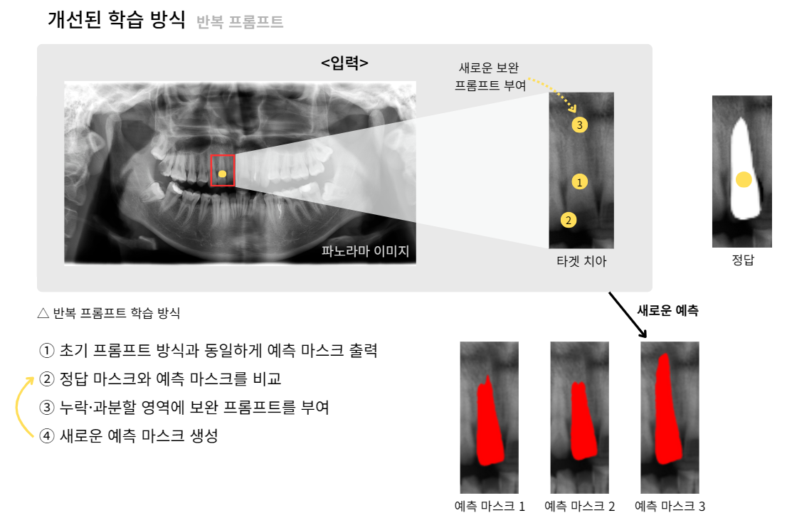
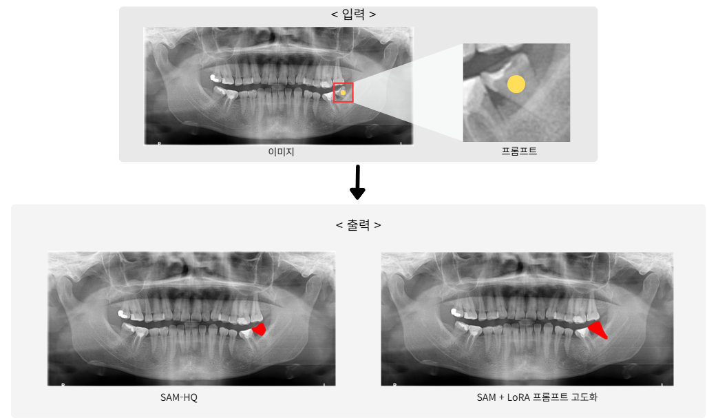
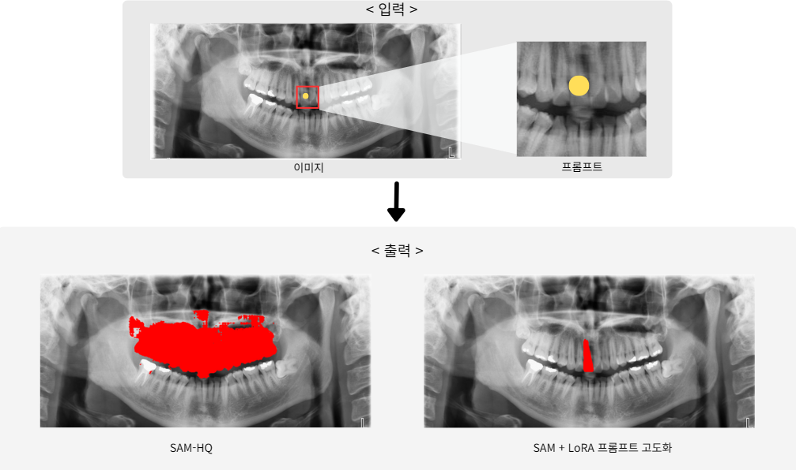
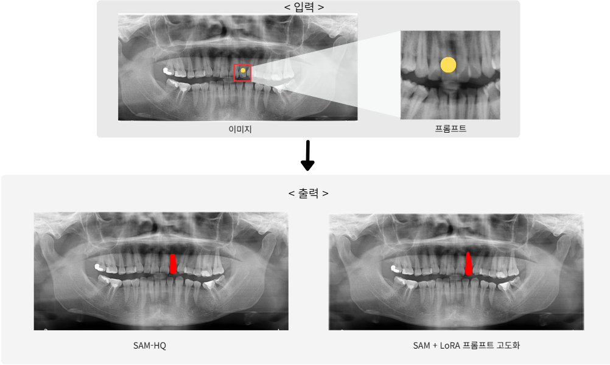
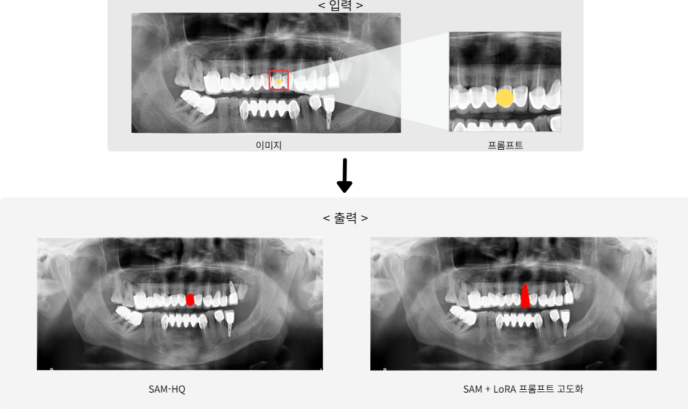

1. Background
Dentists often face difficulties identifying subtle lesions in panoramic X-rays.
However, the available dataset was limited (~2,000 images) and of inconsistent quality,
leading to segmentation errors and unreliable training.
To overcome this, we designed a dual approach:
- Enhance segmentation AI through SAM-HQ + LoRA fine-tuning
- Improve the labeling tool with brush correction and mask transparency adjustment
2. Methodology
- Base Model: SAM-HQ (Meta AI)
- Tuning Strategy: Parameter-Efficient Fine-Tuning (LoRA)
- Prompting: From simple center-point prompts → to iterative correction prompts (up to 11 iterations)
- Dataset: 2,392 training + 269 test X-ray images, plus 10 challenging "bad-case" images

Iterative prompt refinement for correcting under-/over-segmentation
3. Results
- SAM-HQ baseline Dice score: 0.748
- SAM-HQ + LoRA + iterative prompts: 0.914
- Decoder-only and HQ-module-only LoRA also improved, but Encoder+Decoder LoRA gave best results

Root segmentation improvement in low-quality and boundary-ambiguous environments

Blurred region segmentation comparison

Overlapped structure segmentation

Artifact-heavy region handling
4. Tool Customization
- Brush Tool: Enables intuitive "paint-and-erase" correction of masks
- Transparency Control: Adjustable mask overlay opacity for clearer boundary distinction
- Impact: Labeling time reduced by ~32% (250s → 170s per case)
5. Conclusion
Through efficient fine-tuning and practical tool enhancements, we demonstrated that SAM can be
effectively adapted to the medical imaging domain with limited data. This project lays the
groundwork for lesion detection AI models in dental practice, while also highlighting
the importance of usability for clinical adoption.